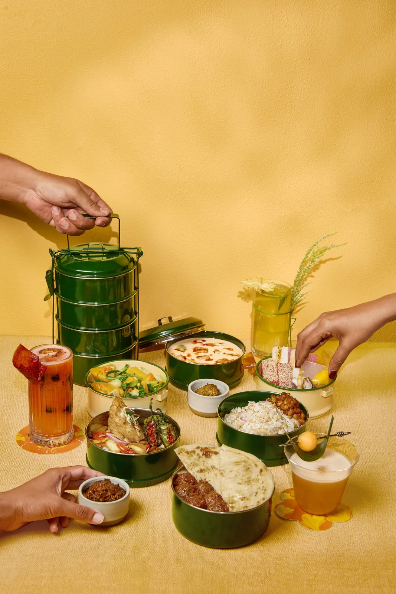
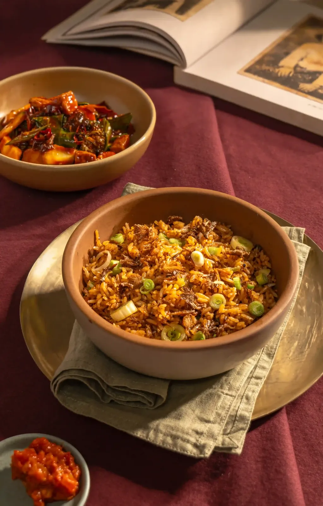
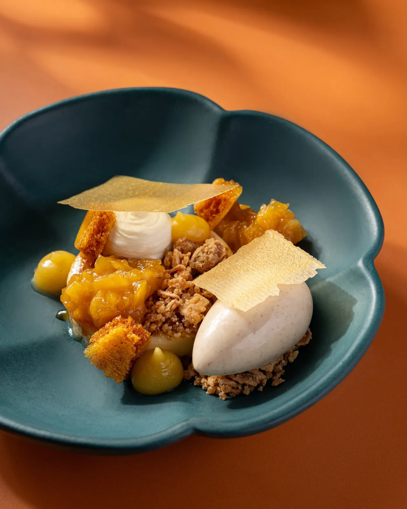
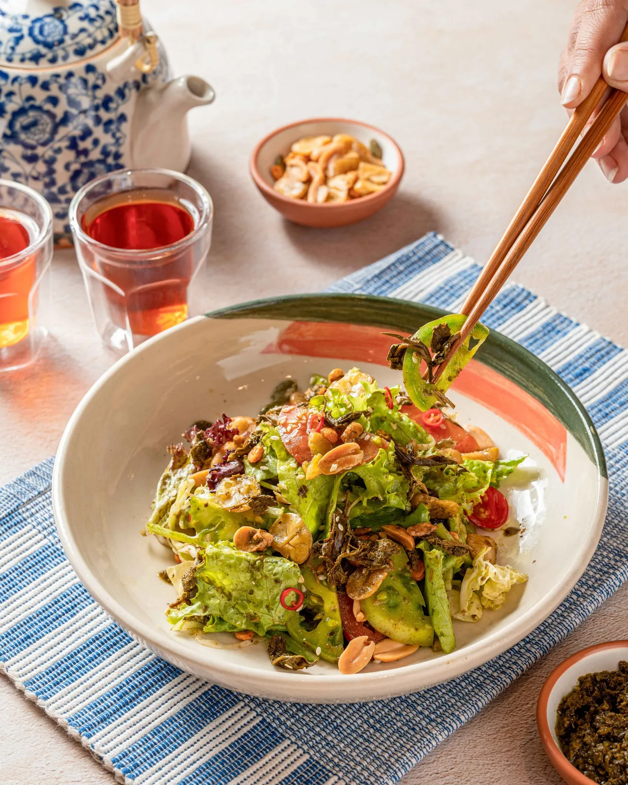
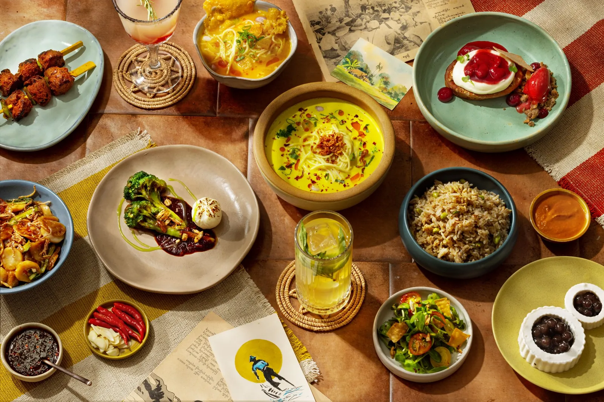
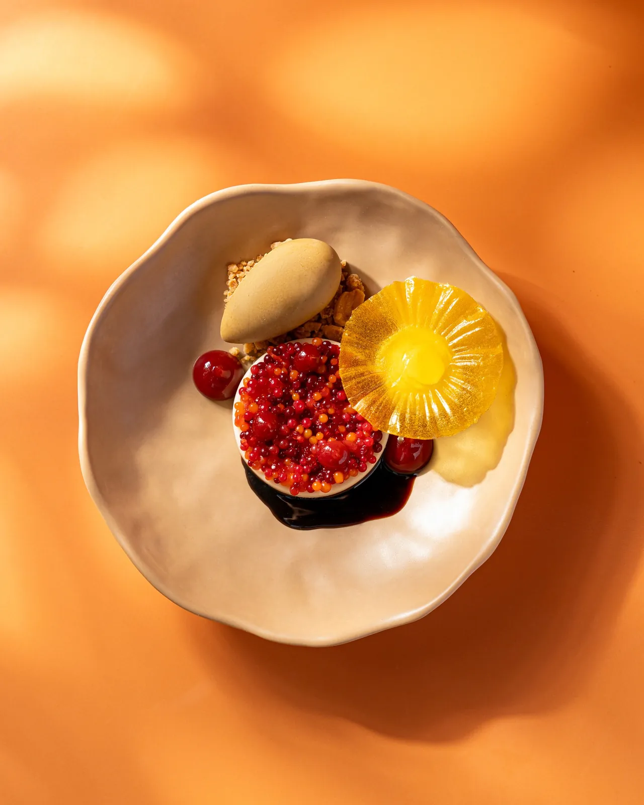
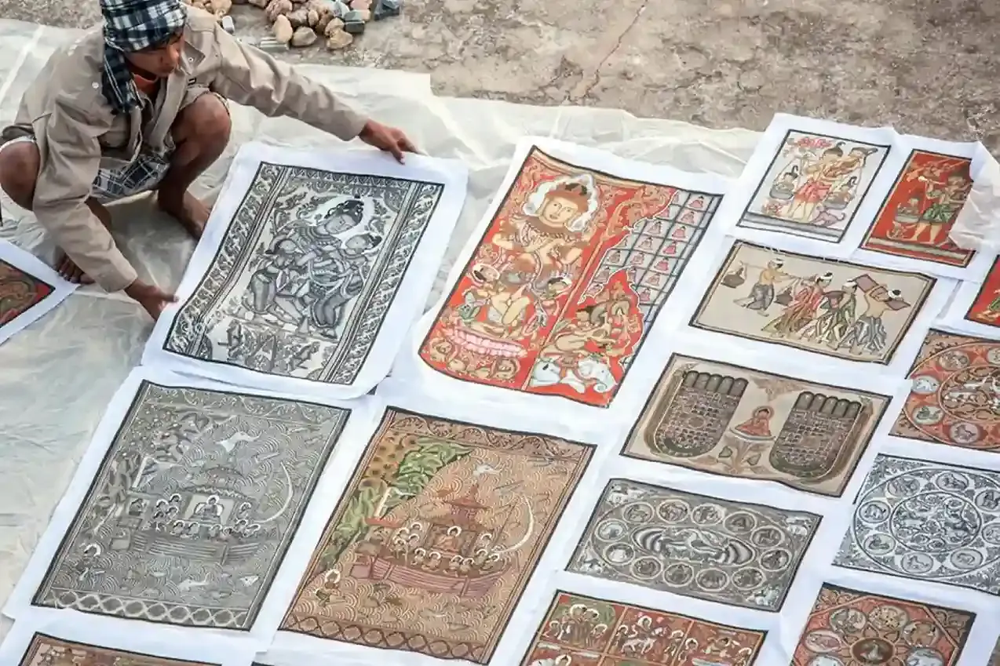

The name
Burma keeps its own time. Literally.
Six and a half hours ahead of Greenwich, an eight-day week, and a day divided into eight watches instead of twenty-four hours. The restaurant is named after a clock that really exists.
UTC +6:30
The half hour nobody else keeps.
Almost every country on earth sits on a whole hour. Myanmar does not. It runs at six and a half hours ahead of UTC — one of a handful of half-hour time zones left in the world, and the only one in Southeast Asia.
Which means that whatever time it is where you are standing, Burma is never quite in step with you. Right now it is twelve and a half hours ahead of Wheaton in winter, and eleven and a half in summer, because Myanmar has never observed daylight saving and Illinois does.
Wheaton, Illinois
—
—
Yangon, Myanmar
—
—
Both clocks are live. Neither of them will ever show the same number of minutes past the hour as the other.
—
Baho · ရို မာေတာ
A Burmese day is eight watches, not twenty-four hours.
In the old Burmese system the day was divided into eight baho of three hours each, and at the turn of every one a drum was beaten and a great bell was struck so the whole city knew where it stood. Eight watches a day, eight days a week — and eight compartments radiating around the well of the lacquer tray that ceremonial tea salad is still served from.
Here is what each of them tastes like.
05:00
Mohinga hour မုန့ဟင်࿆အး
Before the heat arrives, Yangon eats standing up — catfish broth thickened with toasted rice, poured over thin rice noodles from a pot balanced on a shoulder pole. The national breakfast is a soup, and it is eaten before six.
08:00
The tea shop လက်ဖက်ရည်ဆိင်
Plastic stools, a low table, a glass of sweet milk tea the colour of teak. The lahpet yay saing is Burma's parliament, newsroom and living room at once. Nobody rushes and nobody is asked to leave.

11:00
We unlock the door
Front Street, Wheaton. The curry pots have been on since morning and the tea leaf salad is tossed to order. This is the hour the room fills with people who have never eaten Burmese food before.

14:00
Htamin, the rice hour ထမင်း
A Burmese lunch is not a dish, it is a table: one curry, a clear soup, a heap of rice, raw vegetables with balachaung, and something sour. Everything arrives at once and everyone reaches at once.

17:00
Thoke, tossed by hand သုပ်
Thoke means “to mix”, and it is done with fingers rather than tongs. Fermented tea leaf, crisp beans, peanuts, garlic oil, lime. Burma is the only country that eats its tea instead of only drinking it.

20:00
Ohn no khao swè at dusk အုန်းနိာ့ခေါက်ဆဇ࿀
Coconut broth, egg noodles, a squeeze of lime and a fistful of crushed crisp noodles on top. It is the dish every Burmese cook is judged by, and the one most likely to end an evening well.
23:00
19th Street
Chinatown, Yangon. Charcoal smoke, skewers by the handful, cold beer, plastic chairs spilling into the road. The night market is where the city argues, flirts and eats until the grills burn down.

02:00
The quiet
Between two and five the pots go on. Broth is not a quick thing. Somewhere a kitchen light is on, and the day that ends here has already begun again.

The eight-day week
Which day were you born on?
The Burmese week has eight days, because Wednesday splits at noon: before midday is Bodahu, after midday is Rahu. Eight shrines ring the platform of the Shwedagon Pagoda in Yangon, one for each — each with a planet, a corner of the compass and an animal. Every Burmese person knows which one is theirs; it decides the first letter of their name.
Shwedagon
သွေတာဂု࿄
Enter a birthday and the compass will find your post
The dish suggestions are ours, and entirely for fun. The planets, posts and animals are not.

Lahpet · လက်ဖက်
Tea you chew, not tea you sip.
Tea leaves are steamed, packed tight into bamboo and buried to ferment for months. What comes out is soft, sour and faintly bitter — closer to an olive than to a cup of tea.
A dish of lahpet was once how a Burmese court settled an argument. It was sent between rival kingdoms as a formal offering; accepting it ended the dispute, and refusing it meant the quarrel continued. It still appears at weddings, funerals and apologies.
A short glossary
Words worth knowing before you order
-
Thokeသုပ်
“To mix.” Any salad tossed by hand at the moment you order it. Never dressed in advance.
-
Hinဟင်း
Curry — but a Burmese one, where the aromatics are fried in oil until the oil separates and floats clear on top. That layer is the point, not a mistake.
-
Htaminထမင်း
Rice, and by extension a meal. “Have you eaten rice yet?” is how Burma says hello.
-
Ngapiငဆးပိ
Fermented fish or shrimp paste. Pungent on its own, invisible in the pot, and the reason a Burmese curry tastes deeper than its ingredient list suggests.
-
Balachaung
Dried shrimp fried crisp with mountains of garlic, shallot and chili in oil. Burma's condiment, eaten by the spoonful over plain rice.
-
Akyawအကွော်
Anything fried. Akyaw sone is “all of the fried things”, which is exactly what arrives.
-
Montမုန့်
Snack, cake or anything made from a batter — savoury or sweet. Moh hinga carries the word even though it is a soup.
So — it's Burma o'clock.
Whatever watch you're in, the kitchen is set up for it.